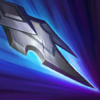
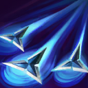
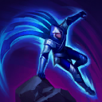
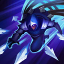

核心裝備
 妖夢鬼刀
妖夢鬼刀 巨蛇鋒牙
巨蛇鋒牙 席利妲咒怨
席利妲咒怨 三相之力
三相之力 守護天使
守護天使

以下為本站 7.2d 校正後的標準配置；實戰仍需依敵方陣容調整。


技能優先：W > Q > E
技能命中敵方英雄或大型野怪會附加裂傷，最多三層；對滿層目標普攻會觸發流血，是清野與爆發收尾的核心。

跳向目標並造成物理傷害；貼身施放時改為近距離刺擊。擊殺目標可回復部分生命並返還冷卻，清野時可用來維持續航。

向前扔出匕首，短暫延遲後返回。去程與回程都會造成傷害，回程命中會緩速並疊加裂傷。

翻越附近地形，讓塔隆能快速穿梭野區與建立意想不到的 Gank 角度；同一段地形在一段時間內不能重複翻越。

向四周射出刀刃並進入潛隱、獲得跑速；離開潛隱或攻擊目標時，刀刃會匯聚至塔隆或被鎖定的敵人。
2技去回程 → 1技突進 → 普攻引爆裂傷 → 立即後撤
二技兩段都命中後再用一技補第三層，普攻觸發流血；對手支援靠近時不要貪後續普攻。
2技去程 → 閃現調位 → 1技近身 → 2技回程 → 普攻引爆 → 點燃
二技去程後閃現改變角度，讓回程更容易命中；三層裂傷完成後普攻引爆並用點燃收尾。
4技潛隱加速 → 2技雙段 → 1技貼近 → 普攻引爆 → 3技翻牆離場
大絕隱藏進場方向並提高跑速，完成裂傷爆發後立刻尋找最近牆體撤退，不要留在後排區等待第二套。
二技去程與回程同時命中可疊兩層裂傷，接一技與普攻觸發流血。三級後快速清線，利用三技翻越側牆消失在視野中，迫使邊線保持警戒。
塔隆的優勢是比對手更快抵達邊線與物件區。先推線再從野區翻牆抓單，逼出閃現或造成減員後立即轉物件，不要一直留在中路正面對耗。
正面切坦克收益很低，耐心等待後排與保護者分開。大絕潛隱接近、完成三層裂傷爆發後立刻翻牆離場，沒有退路時不要先手進場。
對局名單是本站依英雄機制與目前配置整理的參考，不等同固定勝率。
中路優先處理爆發、控制與抗性問題；標準輸出核心不因單一威脅整套推翻。
觸發：對線或團戰有能直接貼近你的刺客／爆發核心，常在完成第一輪輸出前死亡。
魔提斯深淵提供魔防與低血量魔法護盾，比單純增加輸出更能保住進場或持續輸出。
骨甲直接降低同一名敵人接續幾次技能或普攻的傷害。
觸發：敵方有多個關鍵硬控，會讓你無法安全站位或施放完整連段。
先購買水銀飾帶取得主動解控，之後再合成水星彎刀；水銀飾帶是合成組件，不是另一件要與水星彎刀互換的成裝。
犧牲部分輸出型傳奇符文，換取韌性與緩速抗性。
觸發：敵方前排多，團戰需要你持續處理高生命目標，而不是只秒後排。
斷切能直接提高對高生命敵人的普攻傷害。
觸發：敵方治療、吸血或回復讓你的消耗與爆發很難真正壓低血線。
生化龐克鏈鋸之劍提供物攻、生命與技能加速，適合近戰物理角色補重創。
觸發：敵方核心已經針對你的主要傷害類型堆高物防或魔防。
你不是隊伍主要穿透來源，或標準配置已經有足夠百分比穿透／削抗。
提醒：「坦克多」看的是高生命前排；「抗性高」則是對方已經明確堆高物防／魔防，兩種情境不一定相同。
7.2a 中路第四批正式版：技能名稱與核心機制依 Riot Games 台灣《激鬥峽谷》官方英雄資料校正；版本基準採官方 7.2 與 7.2a 更新公告，出裝、符文與對局方向參考 7.2a 當前中路環境後整合。Tier 維持本站既有 46 位中路正式名單評級。｜v62：完整套用阿璃中路固定母版，中路 46/46 全數完成。
本站於 2026-08-27 依 Patch 7.2d 重新檢查此配置。 Tier、出裝、符文與對局屬於 Wild Rift Guide 的整理與分析，不是 Riot Games 官方推薦；版本改動後會再依官方公告與實戰資料校正。